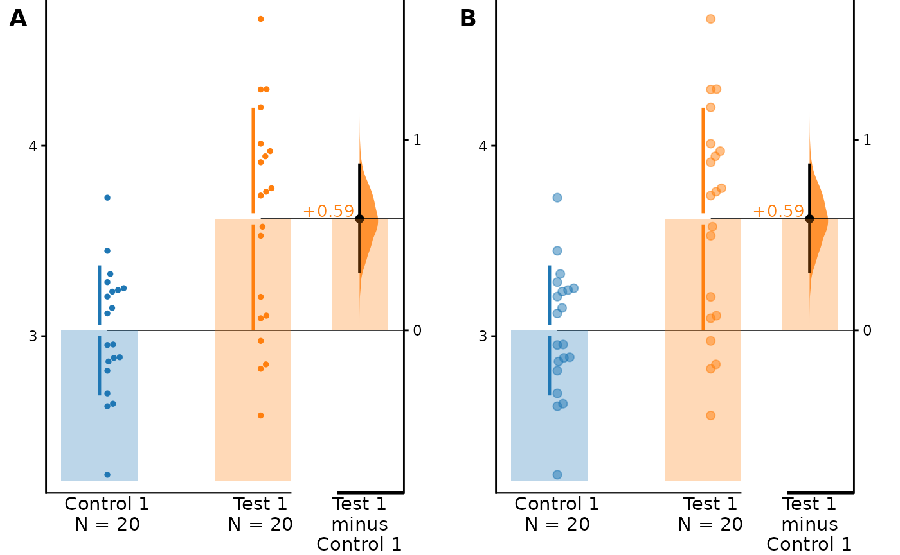
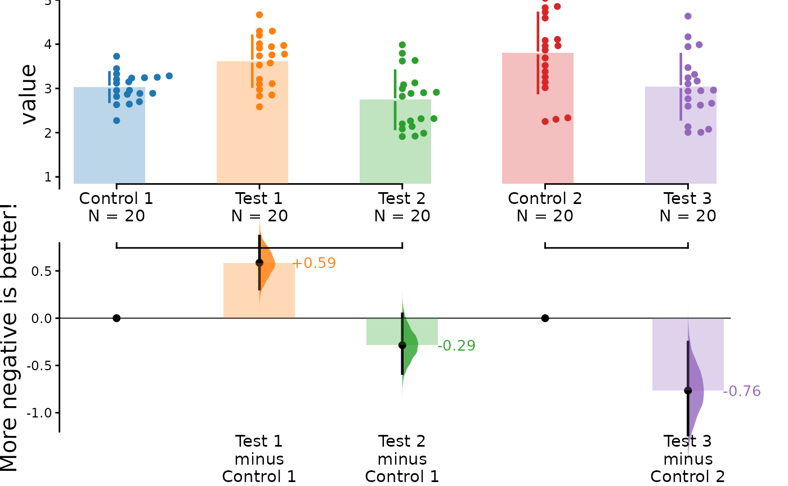
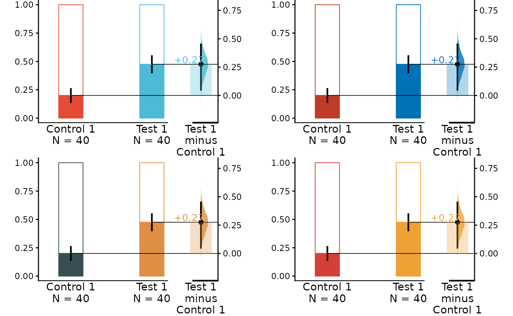
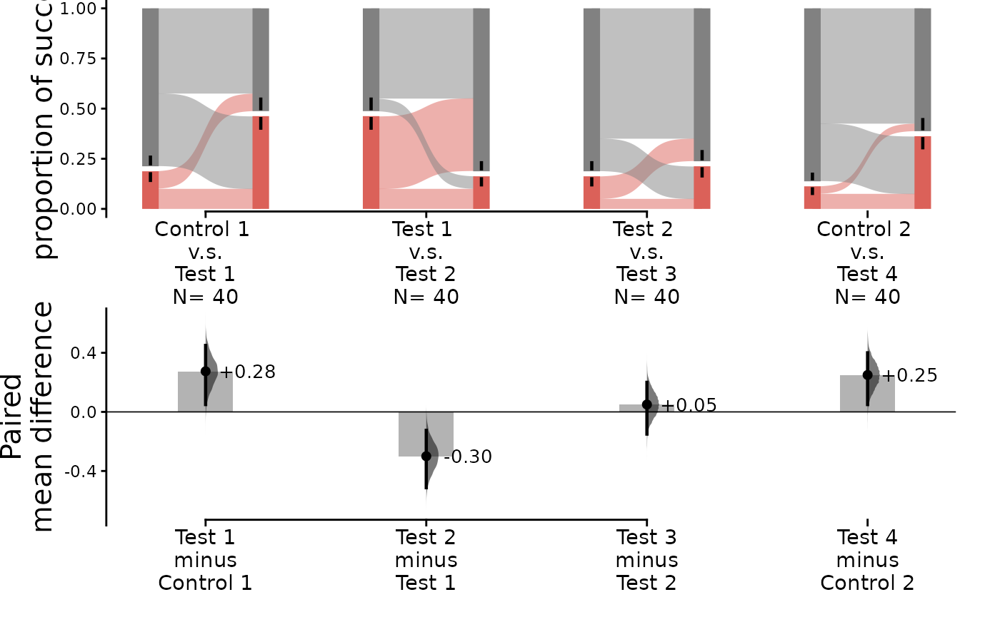

Controlling plot aesthetics is straightforward in
dabestr. A key feature of dabestr is the
ability for users to freely customize various components of a
dabestr estimation plot, allowing for the creation of an
optimal-looking plot.
Getting started
At this point, it is assumed that you have already obtained the
effectsize object named dabest_effectsize_obj. To add and
customize specific plot components, include them as arguments in the
dabest_plot() function.
dabest_plot(
dabest_effectsize_obj,
float_contrast = TRUE,
plot_component = "adjustment_value"
)Adjusting Text
All text elements in the estimation plot can be modified. This includes the value, the size and even the removal of the text elements completely.
Size
The following parameters are responsible for adjusting the size of the text elements.
-
swarm_x_text: Numeric value determining the font size of the x-axis of the swarm plot. The default value is 11. -
swarm_y_text: Numeric value determining the font size of the y-axis of the swarm plot. The default value is 15. -
contrast_x_text: Numeric value determining the font size of the x-axis of the contrast plot. The default value is 11. -
contrast_y_text:Numeric value determining the font size of the y-axis of the contrast plot. The default value is 15.
Check how the size has been changed in this example:
dabest_plot(
dabest_twogroup_obj.mean_diff,
float_contrast = TRUE,
swarm_x_text = 30,
swarm_y_text = 1,
contrast_x_text = 30,
contrast_y_text = 5
)
Content
The following parameters are responsible for adjusting the content of the text elements.
-
swarm_label: string value for the label of the y-axis in the swarm plot. This is the default “value” or “proportion of success” for proportion plots. -
contrast_label: string value for the label of the y-axis in the contrast plot. This is the default “effect size” based on the effect sizes as given ineffect_size(). -
delta2_label: string value for the label of the y-axis in the swarm plot. The default value is NULL.
dabest_plot(
dabest_twogroup_obj.mean_diff,
float_contrast = TRUE,
swarm_label = "I love estimation statistics.",
contrast_label = "I love it more than you do!"
)
Adjusting Visual Elements
Visual elements in dabestr refer to the shapes, lines,
symbols or other visual representations that convey data and
relationship in a plot. Many of these elements can be adjusted in
dabestr.
Markers
The following parameters are responsible for adjusting the properties of various markers in the plot.
-
raw_marker_size: Numeric value determining the size of the points used in the swarm plot. The default value is 1.5.
-
raw_marker_alpha: Numeric value determining the transparency of the points in the swarm plot. The default value is 1. -
raw_bar_width: Numeric value determining the width of the bar in the Sankey diagram. The default value is 0.3. -
raw_marker_spread: The distance between the points if it is a swarm plot. The default value is 2. -
raw_marker_side_shift: The horizontal distance that the swarm plot points are moved in the direction of theasymmetric_side. The default value is 0. -
tufte_size: Numeric value determining the size of the tufte line in the swarm plot. The default value is 0.8. -
es_marker_size: Numeric value determining the size of the points used in the delta plot. The default value is 0.5. -
es_line_size: Numeric value determining the size of the ci line in the delta plot. The default value is 0.8.
A <- dabest_plot(dabest_twogroup_obj.mean_diff,
float_contrast = TRUE,
swarm_label = "", contrast_label = "",
raw_marker_size = 1, raw_marker_alpha = 1
)
B <- dabest_plot(dabest_twogroup_obj.mean_diff,
float_contrast = TRUE,
swarm_label = "", contrast_label = "",
raw_marker_size = 2, raw_marker_alpha = 0.5
)
cowplot::plot_grid(
plotlist = list(A, B),
nrow = 1,
ncol = 2,
labels = "AUTO"
)
Axes
The following parameters are responsible for adjusting the y-axis limits for both the raw data and contrast axes of the plot. By modifying the range, it creates the effect of zooming in or out of the plot.
-
swarm_ylim: Vector containing the y-limits for the swarm plot. The default value is NULL. -
contrast_ylim: Vector containing the y-limits for the delta plot. The default value is NULL. -
delta2_ylim: Vector containing the y-limits for the delta-delta plot. The default value is NULL.
If your effect size is qualitatively inverted (i.e., a smaller value
indicates a better outcome), you can invert the vector passed to
contrast_ylim.
dabest_plot(dabest_multigroup_obj.mean_diff,
float_contrast = FALSE,
contrast_label = "More negative is better!",
swarm_ylim = c(1, 5), contrast_ylim = c(0.7, -1.2)
)
Palettes
The following parameters are responsible for adjusting the plot palettes of the plot.
-
custom_palette: string to set the colour palette. The default value is “d3”. The following palettes are also available: npg, aaas, nejm, lancet, jama, jco, ucscgb, d3, locuszoom, igv, cosmic, uchicago, brewer, ordinal and viridis_d.
npg <- dabest_plot(dabest_unpaired_props.mean_diff,
swarm_label = "", contrast_label = "",
custom_palette = "npg"
)
nejm <- dabest_plot(dabest_unpaired_props.mean_diff,
swarm_label = "", contrast_label = "",
custom_palette = "nejm"
)
jama <- dabest_plot(dabest_unpaired_props.mean_diff,
swarm_label = "", contrast_label = "",
custom_palette = "jama"
)
locuszoom <- dabest_plot(dabest_unpaired_props.mean_diff,
swarm_label = "", contrast_label = "",
custom_palette = "locuszoom"
)
cowplot::plot_grid(
plotlist = list(npg, nejm, jama, locuszoom),
nrow = 2,
ncol = 2
)
Misc
-
sankey: this is a boolean value determining if the flows between the bar charts will be plotted. The default value is TRUE.
dabest_plot(dabest_paired_props.mean_diff, sankey = FALSE, raw_bar_width = 0.15)
-
flow: this is a boolean value determining whether the bars will be plotted in pairs. The default value is TRUE.
dabest_plot(dabest_paired_props.mean_diff, flow = FALSE, raw_bar_width = 0.15)
-
asymmetric_side: this is a string value that controls at which side the swarm points are shown. Accepted values are: “right” or “left”. The default one is “right”.
right <- dabest_plot(dabest_twogroup_obj.mean_diff,
float_contrast = FALSE,
swarm_label = "", contrast_label = "",
asymmetric_side = "right"
)
left <- dabest_plot(dabest_twogroup_obj.mean_diff,
float_contrast = FALSE,
swarm_label = "", contrast_label = "",
asymmetric_side = "left"
)
cowplot::plot_grid(
plotlist = list(right, left),
nrow = 1,
ncol = 2
)-
show_delta2: this is a boolean value determining if the delta-delta plot is shown. The default value is FALSE. -
show_mini_meta: this is a boolean value determining if the weighted average plot is shown. WhenFALSE, the resulting graph would be identical to a multiple two-groups plot. The default value is FALSE. -
show_zero_dot: this is a boolean value determining if there is a dot on the zero line of the effect size for the control-control group. The default value is TRUE. -
show_baseline_ec: this is a boolean value determining whether the baseline curve is shown. The default value is FALSE.
dabest_plot(dabest_multigroup_obj.mean_diff,
float_contrast = FALSE,
show_baseline_ec = TRUE
)